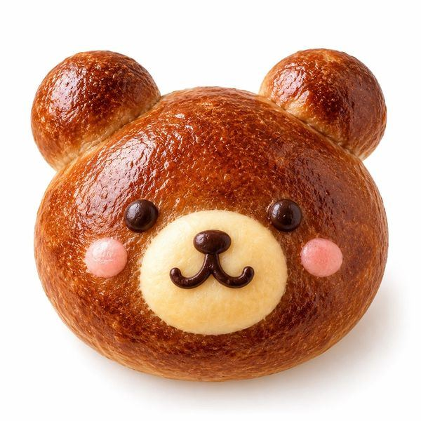
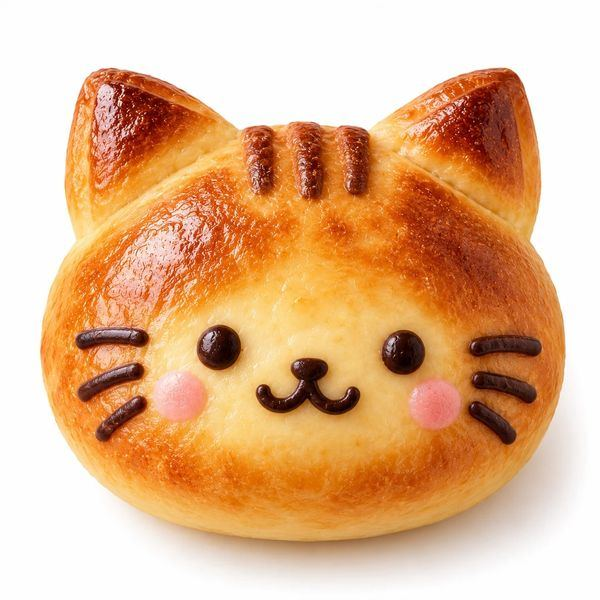
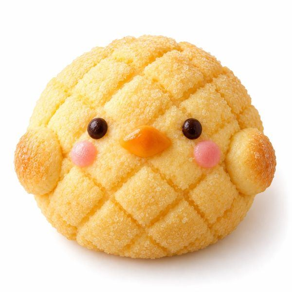
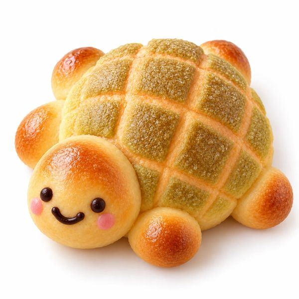

人気の商品は、焼き上がりの時間に合わせてお越しいただくと確実です。
開店に合わせて、朝いちばんに。
バターサンドやフィナンシェも、この時間に並びます。
売り切れた商品を、もう一度焼きます（日によって変わります）。
その日の焼き上がりや売り切れは、Instagram（@petite_douceur・架空）でお知らせしています。

発酵バターのクリームに、ほろ苦いキャラメルを合わせました。厚めに焼いたクッキーで挟んだ、シンプルな組み合わせです。
1個 320円
その時期の素材を使った、5種類の詰め合わせ。
1箱 1,480円
朝食にちょうどいい、軽やかな口どけ。
1斤 480円表情は、ひとつずつ手で描いています。毎日10時ごろ焼き上がり、なくなり次第終了です。

ほんのりビターなチョコクリーム入り。耳はチョコで焼き分けています。
1個 220円
たまごたっぷりの、自家製カスタード入り。
1個 240円
さくさくのクッキー生地に、小さなくちばし。いちばんの人気者です。
1個 200円
甲羅の模様がメロンパン。頭と足は、ふんわりのパン生地です。
1個 260円※写真はイメージです（AIで生成）。ひとつずつ手で描くため、日によって表情が少しずつ違います。

祖母のレシピを、少しずつ今の味に整えながら焼いています。特別な日より、「今日も食べたい」と思ってもらえるおやつを目指しています。